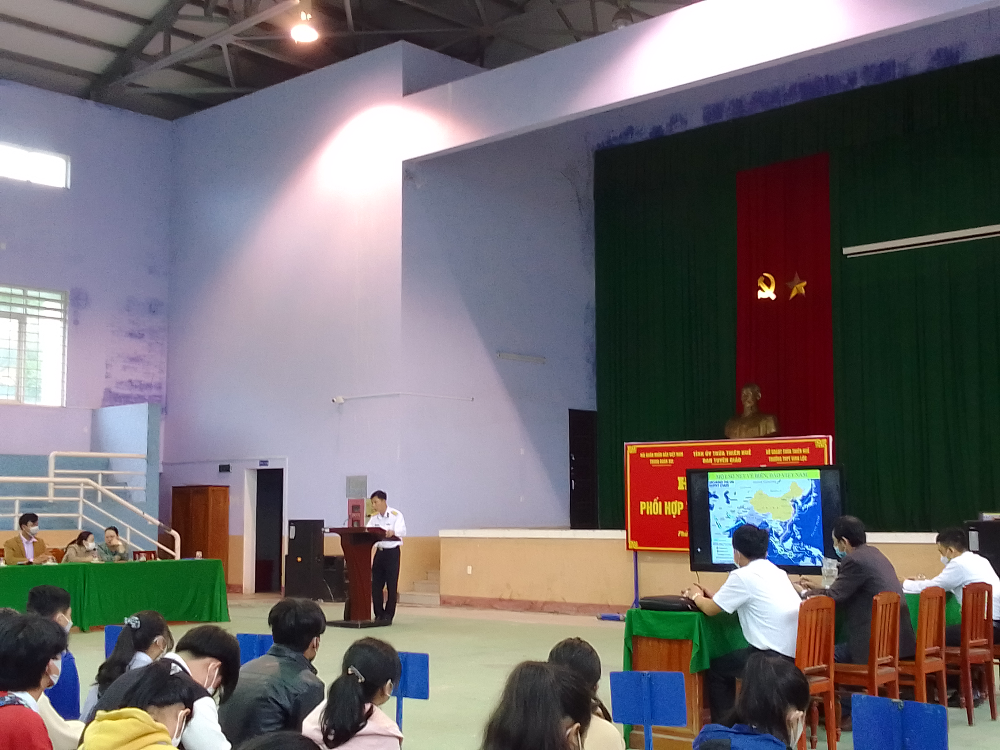

Thực hiện công văn 375-CV/BTGTU về việc phối hợp tuyên truyền thu hút nhân lực xây dựng Quân chủng Hải quân năm 2022, đồng thời nhằm góp phần nâng cao nhận thức của CB,GV,NV và học sinh trong nhà trường về vấn đề biển đảo Việt Nam, sáng ngày 05/4/2022, Trường THPT Vinh Lộc phối hợp với Trung đoàn 351 và Ban Tuyên giáo Tỉnh ủy Thừa Thiên Huế tổ chức Hội nghị “Phối hợp tuyên truyền biển đảo” cho CB,GV,NV và học sinh trong nhà trường.
Về tham dự buổi tuyên truyền, có đồng chí Thượng tá Nguyễn Phương Chinh - Phó Chính ủy Trung đoàn 351 cùng các đồng chí trong Trung đoàn; có sự hiện diện của các đồng chí đại diện Tỉnh ủy Thừa Thiên Huế và Huyện ủy Phú Lộc. Về phía nhà trường, có sự tham dự của đại diện Đảng ủy, Ban Giám hiệu cùng các giáo viên, nhân viên và hơn 500 học sinh Trường THPT Vinh Lộc.
Tại buổi tuyên truyền, thay mặt Trung đoàn 351, đồng chí Thượng tá Nguyễn Phương Chinh - Phó Chính ủy đã thông tin tình hình cơ bản về số lượng, diện tích các đảo và cụm đảo quan trọng trên biển Việt Nam; tình hình xây dựng kinh tế, đời sống xã hội của nhân dân trên đảo; đặc biệt là tình hình bảo vệ biển đảo quê hương của các lực lượng quân đội, cảnh sát, công an nhân dân… Trong đó, Quân chủng Hải quân là lực lượng nòng cốt bảo vệ chủ quyền quốc gia của Việt Nam trên biển. Bên cạnh đó, đồng chí còn cung cấp một số tiêu chuẩn, quy định đối với học sinh muốn thi tuyển vào Học viện Hải quân để các em tham khảo trước kì thi tuyển sinh đại học năm 2022.
Buổi tuyên truyền đã góp phần khơi dậy niềm tự hào dân tộc, truyền thống yêu nước, ý thức và trách nhiệm của mỗi CB,GV,NV và học sinh đối với nhiệm vụ bảo vệ chủ quyền biển đảo thiêng liêng của Tổ quốc.
Một số hình ảnh:
Đồng chí Thượng tá Nguyễn Phương Chinh tuyên truyền về biển đảo Việt Nam và tiêu chí tuyển sinh của Học viên Hải quân
